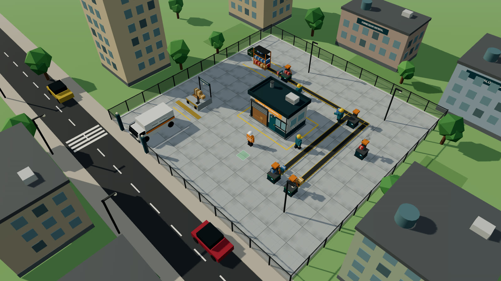
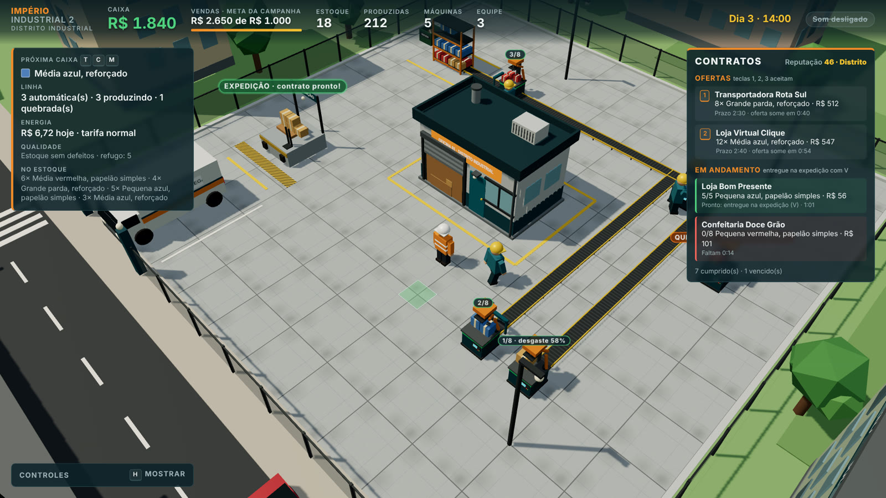
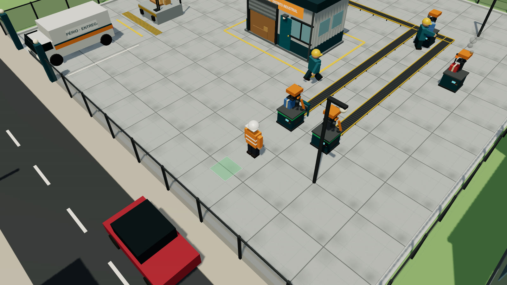
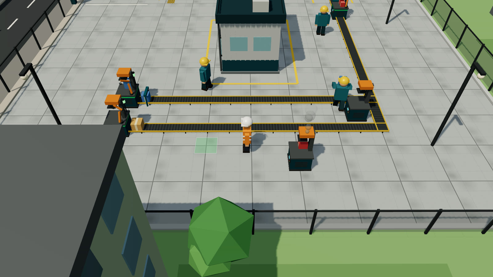
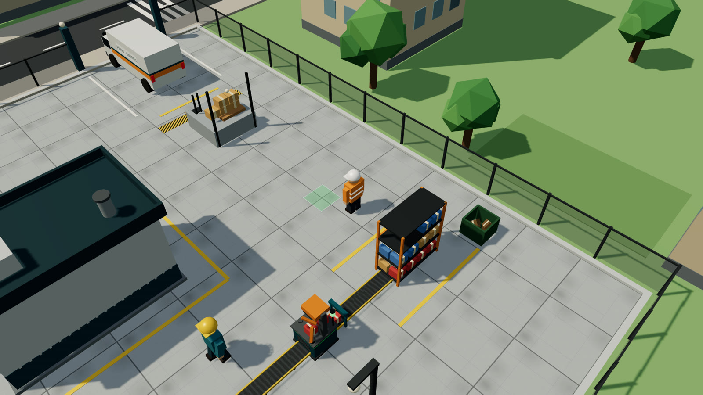
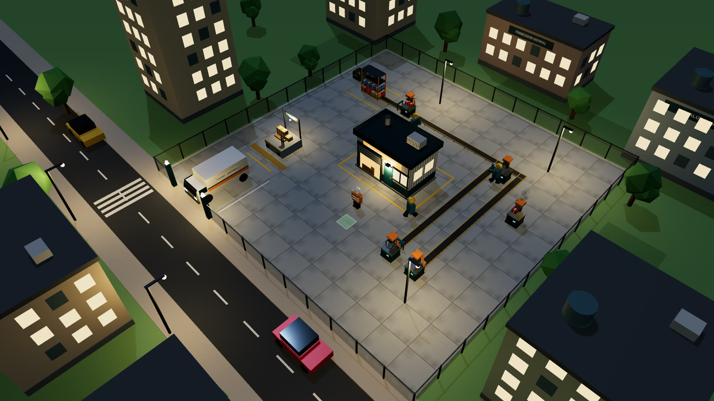

Este guia explica tudo o que existe no jogo até a versão 0.6.3: como começar, o que cada tecla faz, como funcionam contratos, automação, qualidade e energia, e estratégias para crescer rápido.
Jogue no navegador: Portal Pixel. Funciona no computador com teclado e mouse ou com controle de Xbox, PlayStation e similares.

1. Objetivo
Você começa com R$ 100 numa oficina alugada no Distrito Industrial. A meta da campanha é vender R$ 1.000. Contratos e vendas avulsas contam para a meta. A barra laranja no topo da tela mostra o progresso.
Pelo caminho você vai montar máquinas, aceitar contratos de clientes, contratar funcionários, automatizar a linha de produção e manter tudo funcionando com manutenção, inspeção e a conta de luz em dia.
2. Começo rápido: os primeiros 10 minutos

- Clique em Jogar. O jogo começa às 7h do Dia 1, com o personagem de colete laranja na frente da oficina.
- Aceite um contrato. No painel da direita aparece a primeira oferta. Aperte 1 para aceitar. Veja qual caixa ela pede, por exemplo "6× Média parda, papelão simples".
- Escolha a caixa certa. Use T (tamanho), C (cor) e M (material) até o painel da esquerda mostrar, em "Próxima caixa", exatamente o produto do contrato.
- Coloque uma máquina. O quadrado verde no chão, à frente do personagem, mostra onde ela vai ficar. Aperte B (R$ 60). Se o quadrado estiver vermelho, ande até um lugar livre.
- Produza. Chegue perto da máquina e aperte E uma vez por caixa (R$ 2 de papelão cada). As caixas se acumulam em cima da máquina, até 8.
- Guarde no estoque. Ainda perto da máquina, aperte R: as caixas vão para o estoque. O painel de contratos mostra quantas você já tem, por exemplo "4/6".
- Entregue. Quando o contrato ficar verde, vá até a doca de expedição (plataforma com a placa EXPEDIÇÃO, perto da van) e aperte V. O dinheiro sobe da doca e a reputação aumenta.
- Repita e cresça. Com o dinheiro dos primeiros contratos, contrate um funcionário (F, R$ 80) ou ligue uma esteira (L, R$ 40). Com R$ 100 sobrando, automatize a máquina (U).
Dica: no começo, prefira contratos do Mercadinho Aurora e da Loja Bom Presente. Eles pedem poucas caixas pequenas ou médias, de papelão simples, que são baratas de produzir.
3. Controles
Dá para jogar com teclado e mouse ou com controle (Xbox, PlayStation e similares). O controle é reconhecido assim que você aperta um botão, e as dicas da tela passam a mostrar os botões dele. Mexeu no teclado ou no mouse, as dicas voltam a mostrar as teclas.
| Ação | Teclado | Controle |
|---|---|---|
| Andar (segue a câmera) | W A S D ou setas | Analógico esquerdo |
| Colocar máquina (R$ 60) | B | Y |
| Produzir caixa (R$ 2) | E | A |
| Levar saída ao estoque | R | B |
| Entregar ou vender na expedição | V | X |
| Tamanho, cor e material | T, C, M | Direcional ↑, ←, → |
| Aceitar contrato | 1, 2, 3 ou clique na oferta | Direcional ↓ (primeira oferta); as outras pelo menu |
| Ligar esteira (R$ 40) | L | RT |
| Automatizar ou reprogramar (R$ 100) | U | LT |
| Manutenção ou conserto | K | LB |
| Inspecionar ou instalar inspetor | I | RB |
| Contratar funcionário (R$ 80) | F | pelo menu |
| Girar a câmera | Q e Z, ou arrastar o mouse | Analógico direito para os lados |
| Zoom | + e −, ou roda do mouse | Analógico direito para cima e para baixo |
| Menu de comandos | Esc ou botão Mais | Menu |
| Mostrar controles | H | View |
| Som | O ou botão na barra superior | pelo menu |
| Novo jogo | N duas vezes | pelo menu (confirmar duas vezes) |
Com o mouse, tudo também pode ser feito por clique: a barra de ações no rodapé (Máquina, Produzir, Recolher, Entregar, Esteira, Automatizar, Manutenção, Inspecionar, Funcionário e Mais), os botões Tamanho, Cor e Material no painel da esquerda, as ofertas de contrato no painel da direita e o menu de comandos.
No menu de comandos ficam as ações menos frequentes: contratar funcionário, aceitar as ofertas 1, 2 e 3, ligar ou desligar o som, mostrar os controles e começar um jogo novo. No controle, escolha com o direcional, confirme com A e feche com B.
O controle vibra quando você vende e quando uma máquina quebra, se o controle e o navegador suportarem vibração.
Para usar uma máquina (produzir, recolher, esteira, automatizar, manutenção, inspetor), fique a menos de 1,8 metro dela, ou seja, encostado.
4. A tela do jogo
- Barra superior: dinheiro em caixa, vendas e progresso da meta, caixas no estoque, caixas produzidas, máquinas, equipe, relógio (dia e hora) e botão de som.
- Painel de produção (esquerda):
- Próxima caixa: o produto que E, os funcionários e a próxima automação vão fabricar.
- Linha: quantas máquinas são automáticas e quantas estão produzindo, quebradas, sem energia, com a saída cheia ou sem papelão.
- Energia: quanto a conta do dia já soma e a tarifa atual.
- Qualidade: caixas com defeito no estoque e total no refugo.
- No estoque: quantas caixas de cada produto.
- Painel de contratos (direita): reputação, ofertas e contratos em andamento.
- Avisos (centro): mensagens rápidas, como "Caixa produzida" ou "Máquina quebrou!".
- Rótulos no mundo: sobre o estoque, a expedição (avisa quando há contrato pronto) e cada máquina (caixas na saída, desgaste ou QUEBRADA). Quando você vende, o valor sobe da doca.
5. Produzir caixas
- Toda caixa custa R$ 2 de papelão, descontados na hora.
- A máquina guarda até 8 caixas na saída, em cima da mesa. Com a saída cheia, ela não produz mais: aperte R, ligue uma esteira ou deixe um funcionário recolher.
- R leva as caixas direto para o estoque; não é preciso andar até a prateleira.
- Máquinas ocupam uma célula da grade. Não dá para colocar em cima da oficina, da doca, da van, do estoque, da caçamba, dos postes ou de outra máquina.
6. Catálogo e preços
São 3 tamanhos × 3 cores × 2 materiais = 18 caixas diferentes. A cor muda só a aparência e o que o cliente pede; o preço depende do tamanho e do material.
| Tamanho | Papelão simples | Reforçado |
|---|---|---|
| Pequena | R$ 6 | R$ 12 |
| Média | R$ 10 | R$ 20 |
| Grande | R$ 16 | R$ 32 |
Esses são os preços da venda avulsa. Contratos pagam mais (veja a seção 8). O custo de produção é sempre R$ 2, então caixas grandes reforçadas dão o maior lucro por caixa.
7. Estoque e vendas
- O estoque fica na prateleira laranja no fundo do terreno, separado por produto. A prateleira mostra as caixas nas cores dos produtos.
- Na expedição, V faz duas coisas:
- Entrega todos os contratos que o estoque já cobre, do prazo mais curto ao mais longo.
- Se nenhum contrato estiver pronto, vende o estoque livre. Caixas de um produto que algum contrato em andamento pediu ficam guardadas.
- Caixa com defeito vendida avulsa vale metade.
8. Contratos, clientes e reputação
Como funcionam
- Ofertas aparecem no painel da direita: a primeira logo no começo, depois uma a cada 30 segundos (ou 10 segundos se o quadro estiver vazio). Ficam até 3 ofertas.
- Cada oferta mostra o cliente, a caixa exata, a quantidade, o pagamento, o prazo e em quanto tempo ela some (1 minuto). Deixar sumir não tem penalidade.
- Você pode ter até 3 contratos ao mesmo tempo. Aceite com 1, 2 ou 3.
- O painel mostra quantas caixas do produto você já tem. Fica verde quando está pronto e vermelho quando faltam menos de 20 segundos.
Pagamento, multa e reputação
| Situação | Efeito |
|---|---|
| Entrega no prazo, sem defeitos | Recebe o pagamento inteiro e +5 de reputação |
| Entrega com caixas defeituosas | O cliente devolve e não paga por elas; −2 de reputação por caixa (até −10) |
| Prazo vence | Multa de 25% do pagamento e −10 de reputação |
O pagamento por caixa é o preço avulso × a margem do cliente × (1 + reputação ÷ 200). Com reputação 100, o contrato paga 50% a mais.
Reputação
Vai de 0 a 100 e começa em 20. Faixas: Bairro (0), Distrito (30), Regional (60) e Referência (85). Reputação maior libera clientes maiores:
| Cliente | Reputação mínima | Pede | Quantidade | Prazo | Margem |
|---|---|---|---|---|---|
| Mercadinho Aurora | 0 | P ou M, parda, simples | 4 a 8 | 1:30 | ×1,3 |
| Loja Bom Presente | 0 | P ou M, azul ou vermelha, simples | 3 a 6 | 1:40 | ×1,5 |
| Confeitaria Doce Grão | 15 | P, vermelha, simples ou reforçada | 6 a 10 | 1:30 | ×1,6 |
| Transportadora Rota Sul | 30 | G, parda, reforçada | 6 a 12 | 2:30 | ×1,5 |
| Loja Virtual Clique | 50 | M ou G, qualquer cor, reforçada | 10 a 16 | 2:40 | ×1,7 |
| Rede Varejo Centro | 70 | M ou G, parda ou azul | 18 a 30 | 4:00 | ×1,9 |
Os prazos contam em tempo de jogo (minutos:segundos).
9. Funcionários
- F contrata um funcionário (R$ 80, até 3). Não há salário nesta versão.
- Eles trabalham sozinhos, de capacete amarelo:
- Produzem em máquinas manuais que não estejam quebradas nem cheias, fabricando a caixa escolhida em "Próxima caixa". Cada caixa custa R$ 2, como a sua.
- Recolhem a saída de máquinas sem esteira e levam ao estoque, carregando as caixas nas mãos.
- Eles não produzem em máquinas automáticas e não recolhem máquinas com esteira, porque a linha já cuida delas.
Atenção: mudar T, C ou M muda também o que os funcionários fabricam.
10. Esteiras e máquinas automáticas

- Esteira (L, R$ 40): liga a máquina ao estoque. Pega uma caixa a cada 1,2 segundo e a leva a 1,5 metro por segundo. A rota faz um L e contorna a oficina, a doca, a van e a caçamba.
- Automação (U, R$ 100): a máquina passa a produzir sozinha uma caixa a cada 3 segundos, do produto escolhido no momento. Ganha um braço robótico laranja e uma faixa verde.
- Reprogramar (U de novo): troca o produto da máquina automática para a "Próxima caixa" atual, sem custo. Use para atender cada contrato.
- Linha completa: máquina automática + esteira = caixas chegando ao estoque sem você fazer nada.
- Uma esteira dá conta de uma máquina automática com folga. Sem esteira, a máquina automática enche a saída em 24 segundos e para, a menos que você (R) ou um funcionário recolha as caixas.
11. Luz das máquinas
Cada máquina tem uma torre de luz:
| Luz | Situação |
|---|---|
| Apagada | Máquina manual, sem automação |
| Verde | Automática, produzindo |
| Amarela | Automática, sem dinheiro para papelão (menos de R$ 2 em caixa) |
| Vermelha | Saída cheia: recolha com R ou ligue uma esteira |
| Laranja piscando, com fumaça | Quebrada: conserte com K |
| Azul | Sem energia: a conta de luz está atrasada |
12. Desgaste, defeitos e manutenção

- Desgaste: cada caixa desgasta a máquina em 2%. O rótulo sobre a máquina mostra o desgaste a partir de 50%.
- Defeitos: a chance de uma caixa sair com defeito é de 3% com a máquina nova e sobe até 28% com ela totalmente gasta. A caixa defeituosa sai mais escura e torta.
- Quebra: abaixo de 70% de desgaste a máquina não quebra. Entre 70% e 99%, cada caixa tem uma chance que cresce com o desgaste. Em 100% ela quebra com certeza. Quebrada, ela para até ser consertada.
- K perto da máquina:
- Manutenção preventiva: custa 30% do desgaste em reais (de R$ 5 a R$ 30) e zera o desgaste.
- Conserto: se ela já quebrou, custa R$ 60 e também zera o desgaste.
Faça a manutenção quando o rótulo passar de 50%: custa até R$ 15, reduz defeitos e evita a quebra de R$ 60.
13. Inspeção e refugo

- Sem inspeção, as caixas com defeito vão para o estoque misturadas às boas. Na entrega de um contrato, saem na mesma proporção que existe no estoque e voltam como devolução.
- Inspeção manual (I perto do estoque): confere todo o estoque e manda as defeituosas para a caçamba de refugo. Custa R$ 1 a cada 5 caixas.
- Inspetor automático (I perto de máquina com esteira, R$ 80): um pórtico com sensor verde na esteira separa as defeituosas antes de chegarem ao estoque, sem custo extra.
- O painel de produção avisa quantas caixas com defeito há no estoque.
Antes de entregar um contrato grande, aperte I no estoque. Uma inspeção de 20 caixas custa R$ 4 e pode evitar uma devolução com perda de reputação.
14. Energia
- Máquinas e esteiras consomem energia, cobrada por hora de jogo:
| Item | Custo por hora (tarifa normal) |
|---|---|
| Máquina automática produzindo | R$ 1,00 |
| Esteira levando caixas | R$ 0,35 |
| Máquina ligada sem produzir | R$ 0,08 |
- Tarifa: noturna das 22h às 6h (×0,6, mais barata), de pico das 18h às 21h (×1,5, mais cara) e normal no resto do dia. O painel mostra a tarifa atual.
- Conta: à meia-noite a conta do dia é cobrada do caixa. Uma máquina automática produzindo o dia todo gasta cerca de R$ 24.
- Corte: se faltar dinheiro, o que faltar vira dívida e a energia é cortada: máquinas automáticas e esteiras param (luz azul). A dívida é paga sozinha assim que entra dinheiro, e a linha volta a funcionar.
Guarde dinheiro antes da meia-noite. Uma venda avulsa na expedição (V) costuma resolver um corte.
15. Dia, noite e câmera

- Um dia dura 6 minutos de jogo (uma hora de jogo dura 15 segundos). O jogo começa às 7h.
- À noite acendem janelas, letreiros, postes e faróis da van, a energia fica mais barata e a música muda de clima.
- A câmera segue o personagem. Gire com Q e Z ou arrastando o mouse; aproxime e afaste com +, − ou a roda do mouse.
16. Som
- A trilha "Turno no Distrito" começa só com piano e pad na oficina vazia. Entram baixo e chimbal quando há máquinas, bateria quando uma máquina automática está produzindo, e a melodia completa com duas ou mais.
- À noite o arranjo fica mais suave, com a melodia em timbre de sino.
- Efeitos: prensa, venda, contrato aceito, novo cliente, máquina colocada, compras, quebra, conserto e erro. Máquinas mais longe soam mais baixo.
- O ou o botão "Som ligado" na barra liga e desliga. O jogo lembra a escolha.
17. Salvamento e novo jogo
- O jogo salva sozinho a cada 5 segundos e ao fechar ou trocar de aba. O canto da barra superior mostra "Salvo há X s".
- Na tela inicial aparece Continuar com o dia, a hora e o dinheiro da partida salva.
- O save fica no navegador. Outro navegador, outro computador ou uma janela anônima começam do zero. Limpar os dados do site apaga o progresso.
- A cada minuto o jogo guarda uma cópia de segurança, usada se o save principal estragar.
- Se a barra mostrar "Não está salvando" em vermelho, o navegador está bloqueando o armazenamento (janela anônima ou dados de sites bloqueados). A tela inicial também avisa. Nesse caso, use o código do progresso.
Código do progresso
Para guardar a partida fora do navegador ou continuar em outro computador:
- Abra o menu (Esc, botão Mais ou Menu no controle).
- Escolha Copiar código do progresso. Aparece um texto que começa com
II2-e ele já vai para a área de transferência. Guarde num arquivo ou mande para você mesmo. - No outro navegador, abra o menu, escolha Carregar progresso de um código, cole o texto e clique em Carregar. A partida atual daquele navegador é substituída.
Dica: copie o código de vez em quando. É o seu backup, mesmo que alguém limpe o navegador.
Novo jogo
N duas vezes (em até 3 segundos), ou Novo jogo no menu confirmando duas vezes, apaga o progresso e a cópia de segurança e recomeça.
18. Tabela de custos
| Item | Custo |
|---|---|
| Papelão por caixa | R$ 2 |
| Máquina | R$ 60 |
| Funcionário (até 3) | R$ 80 |
| Esteira | R$ 40 |
| Automação de máquina | R$ 100 (reprogramar é grátis) |
| Inspetor automático | R$ 80 por esteira |
| Manutenção preventiva | R$ 5 a R$ 30 |
| Conserto | R$ 60 |
| Inspeção manual | R$ 1 a cada 5 caixas |
| Multa de contrato vencido | 25% do pagamento |
19. Estratégias e dicas
Primeiro dia - Não gaste tudo: depois da primeira máquina sobram R$ 40, que pagam 20 caixas. - Comece pelos contratos pequenos do Mercadinho e da Loja Bom Presente. Cada entrega no prazo dá +5 de reputação; com 30 aparece a Transportadora, que paga bem por caixas grandes reforçadas. - Ordem de compra que costuma funcionar: máquina → contratos → esteira → automação → segunda máquina → funcionário.
Linha de produção - Toda máquina automática deve ter esteira; senão ela enche em 24 segundos e para, ou prende um funcionário só recolhendo caixas. - Reprograme a máquina automática (U) para o produto de cada contrato e volte para a caixa mais lucrativa entre contratos. - Deixe uma máquina manual para os funcionários fazerem pedidos pequenos de outro produto, enquanto a automática trabalha no principal. - Máquinas perto da prateleira têm esteiras curtas, e as caixas chegam mais rápido.
Dinheiro - Caixa grande reforçada vale R$ 32 avulsa e custa R$ 2. É a melhor para vender sem contrato. - Contratos pagam de 30% a 90% a mais que a venda avulsa, e mais ainda com reputação alta. - Mantenha sempre algum dinheiro: abaixo de R$ 2 as máquinas automáticas param (luz amarela), e sem dinheiro à meia-noite a energia é cortada.
Qualidade - Faça manutenção preventiva por volta de 50% de desgaste. - Instale o inspetor nas esteiras das máquinas que mais produzem. - Antes de entregar um contrato grande, inspecione o estoque.
20. Perguntas frequentes
Aperto B e nada acontece. O quadrado no chão está vermelho (célula ocupada) ou você não tem R$ 60. Ande para um lugar livre; o aviso no centro da tela explica o motivo.
Aperto E e não produz. Chegue mais perto da máquina, confira se a saída não está cheia (8 caixas), se ela não está quebrada e se você tem pelo menos R$ 2.
V não vende nada. Você precisa estar na doca de expedição. Se o estoque só tiver caixas reservadas para contratos que ainda não fecharam a quantidade, elas não são vendidas.
O contrato não fica pronto. Confira se o produto é exatamente o pedido: tamanho, cor e material. "Média azul reforçada" é diferente de "Média azul, papelão simples".
Minhas máquinas automáticas pararam. Veja a cor da luz (seção 11): amarela é falta de dinheiro, vermelha é saída cheia, laranja é quebra e azul é corte de energia.
Perdi reputação sem atrasar. Caixas com defeito foram devolvidas. Inspecione o estoque ou instale inspetores.
Não ouço a música. O som começa depois do primeiro clique ou tecla. Confira se o botão na barra está em "Som ligado" (tecla O).
Dá para jogar no celular? Ainda não: o jogo precisa de teclado, mouse ou controle.
Perdi meu progresso. O save fica no navegador em que você jogou. Confira se está no mesmo navegador, sem janela anônima, e se os dados do site não foram limpos. A versão de testes que abre dentro do Claude é separada do Portal Pixel e pode não guardar o save; jogue pelo portal. Para nunca mais perder, copie o código do progresso no menu de vez em quando.
Meu controle não funciona. Aperte qualquer botão com a página do jogo em foco; o navegador só mostra o controle ao site depois disso. Controles de Xbox e PlayStation funcionam por USB ou Bluetooth em navegadores como Chrome, Edge e Firefox.
Guia da versão 0.6.3. Os números deste guia vêm direto das regras do jogo (js/). Se uma versão nova mudar algo, o guia é atualizado junto.